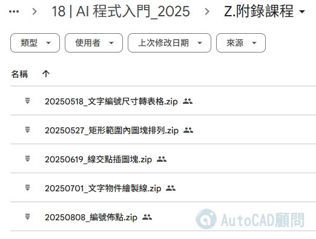

「3分鐘學會編號佈點程式！CSV地圖標記神技 ⚡
還在手動標記座標？試試編號佈點csvpoint！
大量地點標記難題？編號佈點來救援！
CSV檔案變地圖標記，編號佈點這樣做
🔥有加入 AI程式入門線上課程 的朋友🔥
可以前往下載提示詞及 lsp 程式

👇專屬B會員請直接前往下載
[專屬分享]編號佈點：ImportPointsAndText指令_程式下載
https://www.autocad-tw.com/t30224-topic
😁其他朋友想要程式請留言 "畫蝦+1"